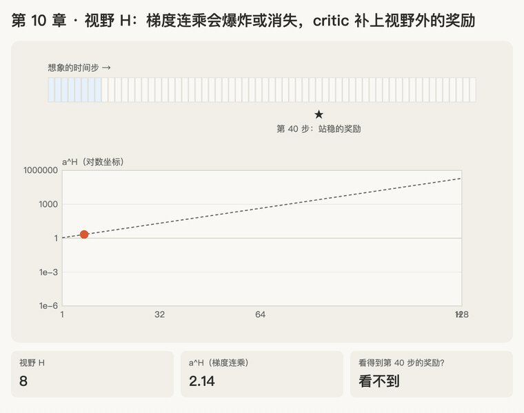

第 10 章 · 在想象里训练：BPTT 只看 32 步，critic 补上后面
本地运行
git clone https://github.com/wikieden/robot-motion-rl
cd robot-motion-rl/code/notebooks
pip install jupyterlab torch numpy
jupyter lab ch10_bptt_critic.ipynb也可以下载后直接用 VS Code 打开 .ipynb 运行。需要 GPU 的章节在 Colab 里选「代码执行程序 → 更改运行时类型 → GPU」。
本章回答：有了可微的 world model，策略的梯度具体怎么算？为什么只往前想象 32 步，不是越长越好？不看 32 步之后，策略会不会变得短视？梯度偶尔特别大怎么办？
讲解日期：2026-11-20 · 上一章：第 9 章 可微 world model · 下一章：第 11 章 SuperMimic 全流程
对应原文：SuperMimic §3.3（papers/supermimic-2610.28480.txtL258–L304，式 2、式 3）、§4.3（L444–L452：critic 让短视野可行、推搡恢复）、表 A.5（L871：梯度裁剪）；SHAC（papers/shac-2204.07137.txt§3，L155；优化地形 L224）
本章缩写：BPTT = Backpropagation Through Time（反向传播 / 穿过 / 时间：把 H 步展开成一张计算图，从后往前链式求导）；H：想象视野（horizon，这里 32）；雅可比 Jacobian：多维函数的导数矩阵（一维时就是普通导数）；SHAC = Short-Horizon Actor-Critic（短视野 / 演员-评论家）；V_ψ：critic（ψ 读 "psi"）；γ：折扣（读 "gamma"）；λ：GAE 参数（读 "lambda"）。全部缩写见 附录 · 缩写与术语表
讲解
第一步：BPTT：梯度是一串导数连乘（2026-11-20）
类比：多米诺骨牌。 你想知道「第一块推得重一点，最后一块倒得多快」，就得把每块之间的影响一块一块乘起来。
想象 H 步：\(\hat s_{t+1} = f(\hat s_t, \pi_\theta(\hat s_t))\)。回报对参数 θ 的梯度，要沿着「θ → 动作 → 下一状态 → 再下一状态 → …」一路链式求导。最关键的一项是状态对初始状态的导数：
一维时，如果每步的导数都是 a，连乘就是 \(a^H\)：
| a \ H | 8 | 32 | 128 |
|---|---|---|---|
| 1.1（每步放大一点） | 2.14 | 21.1 | 198,700 |
| 0.9（每步缩小一点） | 0.43 | 0.034 | 0.0000014 |
稍大于 1 就爆炸，稍小于 1 就消失。接触动力学（脚着地、离地）让这些导数忽大忽小，视野越长越难用。SHAC 专门分析过这种「长视野时优化地形变得崎岖」的现象（§3.2，L224）。
一句话：BPTT 的梯度是 H 个导数连乘，H 一长就爆炸或消失。
第二步：式 2：想象 H 步 + critic 估计后面（2026-11-20）
类比：下棋只算 3 步，第 3 步之后的局面靠「感觉」（局面评估）打分。
SuperMimic 的策略目标（式 2，L272）：
- 前一半：想象的 H = 32 步里，每步奖励按折扣 γ 和生存权重 \(\hat c\)（第 9 章）加起来；
- 后一半：第 H 步之后的事交给 critic \(V_\psi\) 估计。
所以 world model 只需在 32 步内准，后面靠 critic（L260–L261）。critic 用想象轨迹上的 GAE 目标拟合（式 3，λ = 0.95），和第 22 章的 GAE 是同一个东西，只是数据来自想象。整个 BPTT 期间 world model 冻住不更新。
例子（编的）：H = 3，每步奖励 1，生存权重全是 1，γ = 0.99，\(V(\hat s_3) = 50\)：
critic 那一项占了绝大部分，所以它准不准很重要。
一句话：前 H 步用模型精确求导，H 步之后用 critic 估一个数接上。
第三步：没有 critic 会怎样（2026-11-20）
类比：只看眼前三步的棋手，会为了吃一个兵丢掉一个车。
假设「摔倒后重新站稳」这件事的奖励要到第 40 步才拿到：
| 设置 | 看得到第 40 步的奖励吗 |
|---|---|
| H = 16，无 critic | 看不到 |
| H = 16，有 critic | 看得到（V 把它折算回来） |
| H = 64，无 critic | 看得到，但要扛 64 步的梯度连乘 |
SuperMimic §4.3（L446–L452）的实验：
- 无 critic：H ≤ 16 就训不出来；
- 有 critic：H = 16 已经追平无 critic 的 H = 32，H = 32 最快达到目标回报；
- H 从 64 加到 128：达到目标的时间几乎翻 3 倍，最终回报还更低（128 是一张 H100 装得下的最长视野）；
- 行为差别：回报差不多时，在 0.5–4 m/s 的推搡下，有 critic 的策略 0.5–2.4 秒内站稳；无 critic 的策略 0.5 m/s 就踉跄、4 m/s 就摔。恢复平衡的回报在 32 步之外，只有 critic 看得见。
一句话：没有 critic，策略只看 32 步，学不会「现在吃点亏、几秒后站稳」。
第四步：确定性策略与梯度双重裁剪（2026-11-20）
确定性策略：\(a_t = \pi_\theta(o_t, g_t)\)（L219）。解析梯度不需要靠随机采样探索方向（第 8 章），所以策略不用是高斯的。好处是第 2 章那个自碰撞惩罚可以删掉：随机策略可以「把两只手压在一起」来压住动作噪声、骗取速度奖励，确定性策略没有噪声可压，这个漏洞就没了（附录 A，L698–L702）。
梯度裁剪：BPTT 的梯度偶尔会有尖峰（第一步的爆炸）。SuperMimic 表 A.5（L871）做两层：
- 全局范数超过 1 就整体缩放到 1；
- 再把每个元素截到 ±0.1。
例子：g = [3, 0.4, −0.05]，范数 = √(9 + 0.16 + 0.0025) ≈ 3.027：
| 步骤 | 结果 |
|---|---|
| 缩放到范数 1（÷ 3.027） | [0.991, 0.132, −0.0165] |
| 逐元素截到 ±0.1 | [0.1, 0.1, −0.0165] |
第一层保方向、控总量；第二层防止某一个参数被单独推得太猛。
一句话：解析梯度不需要随机策略；梯度先按总量缩，再逐个截，防尖峰。
动画演示：视野 H、梯度连乘与 critic

可交互版：animations/10-bptt-horizon.html（滑块：视野 H、每步导数 a；开关：critic）。
怎么看：
- 上方一排格子是想象的时间步，蓝色是 H 步视野，第 40 格的星星是「站稳」的奖励（第三步）。
- 关掉 critic、H < 40 时星星是灰的（看不到）；打开 critic，视野末端多一根箭头把星星的价值带回来。
- 下方柱子是 \(a^H\)（对数坐标），拖 H 和 a 看它怎么爆炸或消失（第一步）。
练习与作答记录
题 1（第一步）：每步导数 a = 1.05，H = 16 和 H = 64 时 \(a^H\) 各约多少？如果 a = 0.95 呢？
作答：（待作答）
题 2（第二步）：H = 2，每步奖励 1，\(\hat c_0, \hat c_1, \hat c_2 = 1, 0.9, 0.8\)，γ = 1，\(V(\hat s_2) = 10\)。算 \(\hat J\)。
作答：（待作答）
题 3（第四步）：g = [0.6, 0.6, 0.6]，按两层裁剪算结果。为什么 SuperMimic 能删掉自碰撞惩罚？
作答：（待作答）
口诀
多米诺连乘，H 长就爆炸或消失；
前三十二步精确求导，后面交给 critic 估；
没有 critic 只看眼前，推一把就站不稳；
确定策略没噪声可压，梯度先缩总量再截单个。
本章复习卡片
M19（BPTT 梯度是雅可比连乘，视野太长会爆炸 / 消失）、M20（式 2：H 步想象 + critic；无 critic 时的短视问题）
附录 · 延伸阅读
留给以后深入学习用，不影响本章主线。★ 是建议先读的。
推荐阅读
| 读什么 | 读哪里 | 读它为了什么 |
|---|---|---|
| ★ SuperMimic §3.3、§4.3 | papers/supermimic-2610.28480.txt L258–L304、L444–L452 |
式 2、式 3、H 扫描与 critic 消融原文 |
| ★ SHAC | papers/shac-2204.07137.txt §3（L155）、§3.2（L224） |
短视野 + critic 的原型，长视野优化地形的分析 |
| SuperMimic 表 A.5 | 同上 L871 起 | 学习率、批量、裁剪、UTD 等全部超参 |
| DreamerV3 | papers/dreamerv3-2301.04104.txt |
另一种在想象里训 actor-critic 的做法 |
| 《从零学强化学习》第 22 章 | cs285-deep-rl/notes/lessons/22-actor-critic-gae.md |
GAE 目标怎么算（式 3 用的就是它） |
数学原理
- 链式法则：\(\frac{d}{dx}f(g(x)) = f'(g(x))\,g'(x)\)；展开 H 层就是 H 个导数连乘。
- 指数增长：\(1.1^{32} = e^{32\ln 1.1} \approx e^{3.05} \approx 21\)；ln 1.1 ≈ 0.095。
- 按范数缩放：\(g \leftarrow g\cdot\min(1, c/\|g\|)\)，方向不变，长度不超过 c。
公式清单
| 公式 | 意思 |
|---|---|
| \(\partial\hat s_H/\partial\hat s_0 = \prod_t \partial\hat s_{t+1}/\partial\hat s_t\) | BPTT 的雅可比连乘 |
| \(\hat J = \sum_{t<H}\gamma^t\hat c_t\hat r_{t+1} + \gamma^H\hat c_H V_\psi(\hat s_H)\) | 想象目标（式 2） |
| \(\hat R_t = \hat r_{t+1} + \gamma(1-\hat d_{t+1})[(1-\lambda)V_{t+1} + \lambda\hat R_{t+1}]\) | critic 的 GAE 目标（式 3） |
| 先 \(g \cdot \min(1, 1/\|g\|)\)，再 clip ±0.1 | 梯度双重裁剪 |
代码对照：把本章的数字用代码算一遍
用 Python + NumPy 把讲义里讲过的数算一遍，不算练习题。代码在仓库本地
robot-motion-rl/solutions/chapter-code/ch10_bptt_critic.py，配套测试tests/test_ch07_11.py，notebook 在notebooks/ch10_bptt_critic.ipynb。Mac 上直接能跑，不需要 GPU：
bash cd robot-motion-rl/solutions/chapter-code uv run python ch10_bptt_critic.py uv run pytest tests/test_ch07_11.py
讲义 ↔ 代码（a、奖励、V 是编的，裁剪规则取自表 A.5）：
| 讲义 | 公式 | 写法 | 跑出来 |
|---|---|---|---|
| 第一步 连乘 | \(a^H\) | jacobian_product(a, h) |
1.1³² = 21.11；0.9³² = 0.0343 |
| 第二步 式 2 | 求和 + 折扣后的 V | imagined_objective([1, 1, 1], 0.99, [1]*4, 50) |
51.485 |
| 第三步 视野外 | — | sees_reward(h, 40, critic) |
False、True、True |
| 第四步 裁剪 | 缩放 + 截断 | clip_grad([3, 0.4, -0.05]) |
[0.1, 0.1, −0.0165] |
关键几行：
j = sum(gamma**t * survival[t] * rewards[t] for t in range(h)) # 想象的 H 步
j += gamma**h * survival[h] * v_end # critic 接上 H 步之后
if norm > 1: g = g / norm # 第一层：全局范数缩到 1
g = np.clip(g, -0.1, 0.1) # 第二层：逐元素截到 ±0.1
代码里才看得到的 2 件事：
sees_reward是个理想化的布尔判断：真实 critic 是学出来的，只能「大致」把视野外的价值带回来，学不准时策略仍然会短视。- 式 2 里 \(\hat r_{t+1}\) 的下标比 t 大 1（《从零学强化学习》第 1 章说过：做完动作才拿奖励），代码里用
rewards[t]存的就是 \(r_{t+1}\)。
自己改一改（不影响练习答案）：
- 把 V 改成 0（相当于没有 critic），看 J 掉多少，体会 critic 项的分量。
- 打印 1.1 和 0.9 在 H = 1…128 上的 \(a^H\)，画出爆炸和消失的曲线。